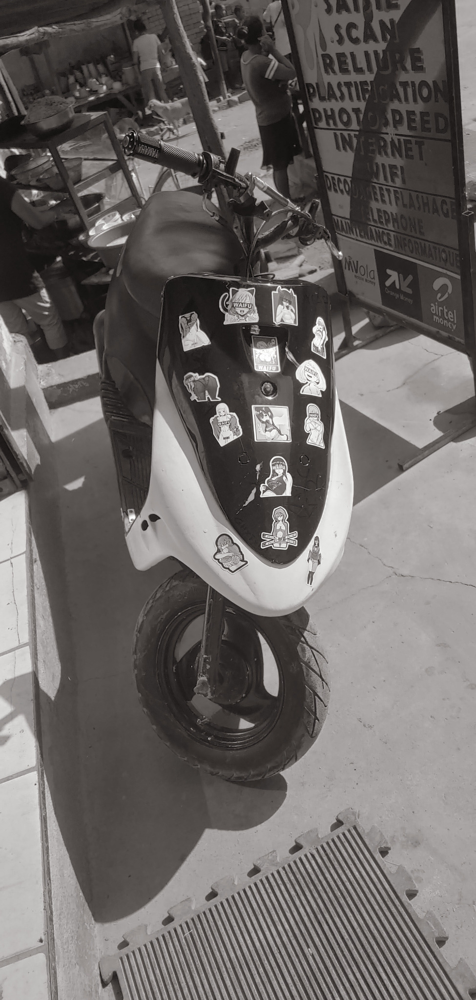
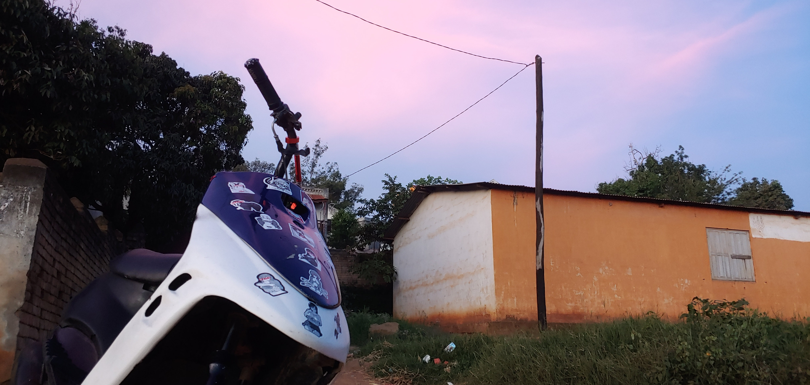

Bienvenue sur mon site moto
Dans ce site, on va parler de mon Yamaha Jog 90.
Ma moto
- Modèle : Jog 4
- Moteur : 90cc
- Couleur : Bleu, noir, blanc
J'ai ce Jog depuis maintenant 2 ans. Je l'ai modifié pour plus de puissance et plus d'adrénaline, mais il n'est pas encore à sa puissance maximale.
Et il s'en est passé des choses avant d'arriver à ce résultat.
Voici les étapes
Voyons un par un les étapes
Achat des deux parties principales
Au début, avoir une moto n’était pas vraiment dans mon programme de vie. Puis un mécano m’a fait une offre : un cadre de Jog 4 et un moteur de Jog 90 à un prix très abordable. Alors j’ai accepté. En vrai, je ne le savais pas encore, mais c’était le meilleur choix à faire. C’était le début d’une aventure de fou.

Montage
Alors, un mois après, le montage a enfin commencé. Ça n’a pas pris beaucoup de temps parce que le cadre et la patte moteur étaient compatibles. Moi, dans ma tête, c’était : "Pourquoi j’ai acheté cette merde ?". Mais d’un autre côté, j’étais un peu content, j’avais hâte de voir cette bête rouler. Après le montage, on l’a nettoyée (vu la tonne de poussière qu’il y avait dessus), et petit à petit, le petit Jog goth commençait à ressembler à quelque chose.
Achat des équipements
Avoir un scooter c’est bien, mais tu vas pas aller loin avec un moteur sans alimentation. Alors on a installé les équipements de base :
- le générateur
- le CDI
- la bobine
Sans ces trois éléments, le moteur n’aurait pas de courant, donc pas de combustion. Après l’installation de ces éléments, plus le carburateur et tout ce qui va avec, le moteur s’est allumé. Évidemment, j’ai souri comme un enfant. Enfin, la bête s’est réveillée.

Réglage de la boîte
Bon, le moteur tournait bien, mais la moto n’était pas vraiment puissante. Alors on a dû changer quelques éléments dans la boîte :
- la courroie
- les galets
En même temps, on a enlevé la limite du variateur et changé le ressort de poussée de l’embrayage. Rien que ça, et la bête a enfin montré de quoi elle était capable. Mais ça se voyait qu’elle en voulait encore plus.
Préparation moteur
Quelque temps après, on roulait tranquille, et là, y a eu un bruit bizarre. Le moteur s’est arrêté direct. On comprenait pas trop ce que c’était : surchauffe ? segments HS ? On savait pas. Le lendemain, on a ouvert le moteur : le circlip qui immobilisait l’axe du piston avait lâché et s’était mis entre le piston et la chemise. Résultat : cassure irréversible. Le piston, les segments, la chemise, tout était foutu.
Jusque-là, le moteur n’avait qu’un alésage de 50cc. On a donc profité de l’accident pour augmenter la puissance : alésage 52. Pas un gros décalage en chiffres, mais en puissance, c’est autre chose.
Ça a pris du temps, mais ça en valait la peine.
Bouton magique hehe